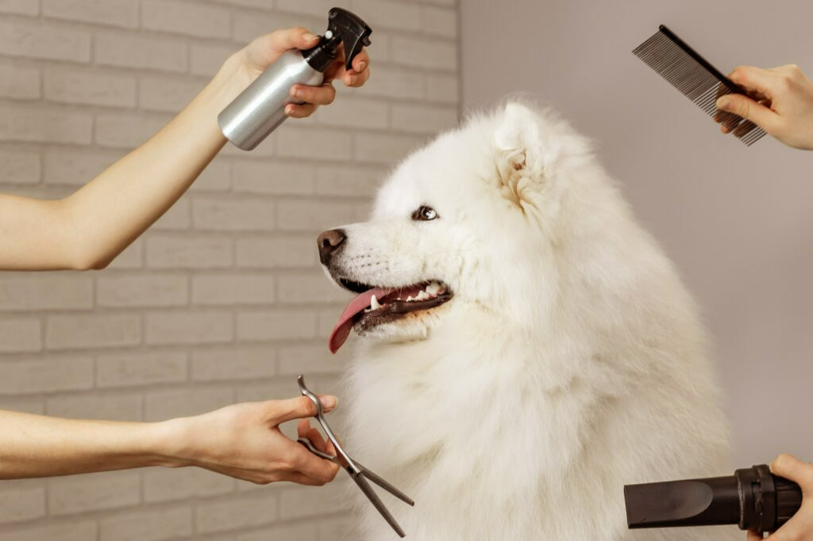

Let's Groom our Dog

- Brush: Regularly brush your dog's coat to remove tangles and loose hair.
- Bath: Use dog-friendly shampoo to bathe your dog when needed.
- Nails: Trim your dog's nails, being careful not to cut too close to the quick.
- Ears: Clean your dog's ears with a dog-friendly solution and cotton balls.
- Teeth: Brush your dog's teeth using a dog toothbrush and toothpaste.
- Paws: Trim hair around the paws and check for debris.
- Positive Reinforcement: Use treats and praise to create a positive grooming experience.
- Professional Help: Consider professional grooming for specialized care.
- Routine: Establish a regular grooming routine for overall health and well-being.
*Note:Remember, grooming should be a positive experience for both you and your dog.
If you encounter any health concerns or if grooming becomes challenging, consult with a veterinarian or professional groomer for guidance.